Leverandørreskontro er et detaljert register som viser alle økonomiske transaksjoner mellom bedriften og hver enkelt leverandør. Dette er en underreskontro til hovedboken som gir en komplett oversikt over leverandørgjeld og betalingshistorikk for hver leverandør individuelt.
I motsetning til kundereskontro som håndterer kundefordringer, fokuserer leverandørreskontro på å spore alle innkjøps- og betalingstransaksjoner med leverandører og fungerer som grunnlag for effektiv kreditoroppfølging.
For en generell oversikt over reskontro, se Hva er Reskontro?.
Hva inneholder en leverandørreskontro?
En leverandørreskontro fungerer som en individuell konto for hver leverandør og inneholder detaljert informasjon om alle økonomiske forhold mellom bedriften og leverandøren.
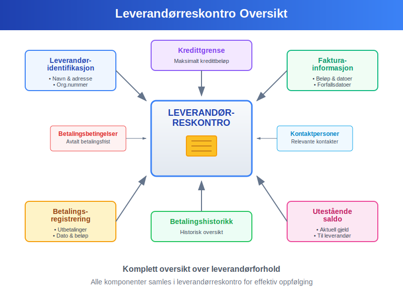
Hovedkomponenter i leverandørreskontro:
- Leverandøridentifikasjon: Navn, adresse, organisasjonsnummer og kontaktinformasjon
- Fakturainformasjon: Alle mottatte fakturaer med beløp og forfallsdatoer
- Betalingsregistrering: Utbetalinger med dato og beløp
- Utestående saldo: Aktuell gjeld bedriften har til leverandøren
- Kredittgrense: Maksimalt kredittbeløp fra leverandøren
- Betalingshistorikk: Historisk oversikt over betalingsmønstre
- Betalingsbetingelser: Avtalt betalingsfrist og eventuelle rabatter
- Kontaktpersoner: Relevante kontaktpersoner hos leverandøren
Forskjellen mellom Leverandørreskontro og Hovedbok
Mange forveksler leverandørreskontro med hovedbokføring, men det er viktige forskjeller mellom disse systemene.
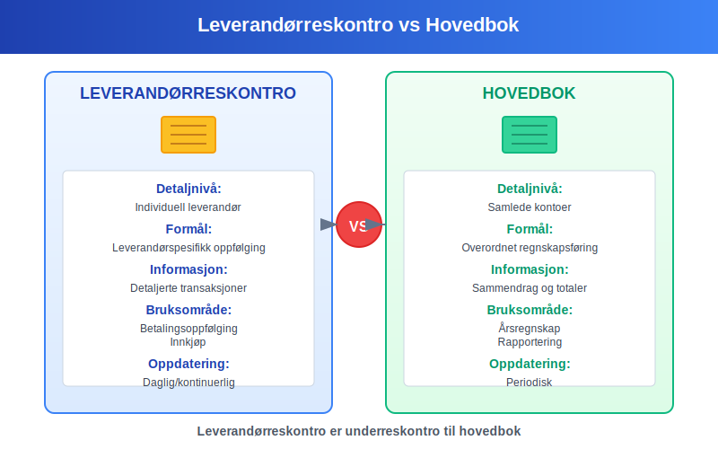
Hovedforskjeller:
| Aspekt | Leverandørreskontro | Hovedbok |
|---|---|---|
| Detaljnivå | Individuell leverandør | Samlede kontoer |
| Formål | Leverandørspesifikk oppfølging | Overordnet regnskapsføring |
| Informasjon | Detaljerte transaksjoner | Sammendrag og totaler |
| Bruksområde | Betalingsoppfølging, innkjøp | Årsregnskap, rapportering |
| Oppdateringsfrekvens | Daglig/kontinuerlig | Periodisk |
| Avstemming | Mot hovedbok | Mot underreskontraer |
Leverandørreskontro i praksis
Leverandørreskontro oppdateres kontinuerlig når transaksjoner med leverandører finner sted og danner grunnlaget for effektiv kreditorhåndtering.
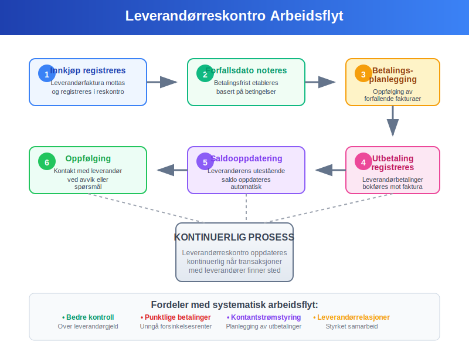
Typisk arbeidsflyt:
- Innkjøp registreres: Leverandørfaktura mottas og registreres i leverandørreskontro
- Forfallsdato noteres: Betalingsfrist etableres basert på betalingsbetingelser
- Betalingsplanlegging: Kontinuerlig oppfølging av forfallende fakturaer
- Utbetaling registreres: Leverandørbetalinger bokføres mot riktig faktura
- Saldooppdatering: Leverandørens utestående saldo oppdateres automatisk
- Oppfølging: Kontakt med leverandør ved avvik eller spørsmål
Praktisk eksempel på leverandørreskontro
Her er et detaljert eksempel på hvordan en leverandørreskontro kan se ut for en leverandør over en tremånedersperiode:
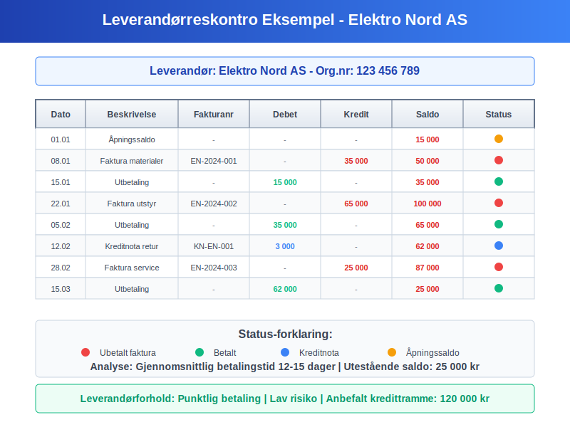
Leverandør: Elektro Nord AS
| Dato | Beskrivelse | Fakturanr | Debet | Kredit | Saldo |
|---|---|---|---|---|---|
| 01.01 | Åpningssaldo | - | - | - | 15 000 |
| 08.01 | Faktura materialer | EN-2024-001 | - | 35 000 | 50 000 |
| 15.01 | Utbetaling | - | 15 000 | - | 35 000 |
| 22.01 | Faktura utstyr | EN-2024-002 | - | 65 000 | 100 000 |
| 05.02 | Utbetaling | - | 35 000 | - | 65 000 |
| 12.02 | Kreditnota retur | KN-EN-001 | 3 000 | - | 62 000 |
| 28.02 | Faktura service | EN-2024-003 | - | 25 000 | 87 000 |
| 15.03 | Utbetaling | - | 62 000 | - | 25 000 |
Analyse av leverandørforholdet:
- Gjennomsnittlig betalingstid: 12-15 dager
- Betalingsmønster: Punktlig og regelmessig
- Leverandørrisiko: Lav basert på leveringshistorikk
- Anbefalt kredittramme: 120 000 kr
- Betalingsbetingelser: Netto 14 dager
Typer leverandørreskontro-systemer
Moderne bedrifter kan velge mellom ulike tilnærminger til leverandørreskontro avhengig av størrelse og kompleksitet.
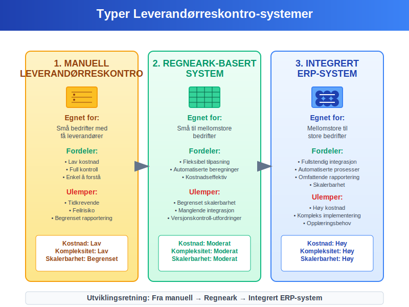
1. Manuell leverandørreskontro
Egnet for: Små bedrifter med få leverandører
Fordeler:
- Lav kostnad
- Full kontroll
- Enkel å forstå
Ulemper:
- Tidkrevende
- Feilrisiko
- Begrenset rapportering
2. Regneark-basert system
Egnet for: Små til mellomstore bedrifter
Fordeler:
- Fleksibel tilpasning
- Automatiserte beregninger
- Kostnadseffektiv
Ulemper:
- Begrenset skalerbarhet
- Manglende integrasjon
- Versjonskontroll-utfordringer
3. Integrert ERP-system
Egnet for: Mellomstore til store bedrifter
Fordeler:
- Fullstendig integrasjon
- Automatiserte prosesser
- Omfattende rapportering
- Skalerbarhet
Ulemper:
- Høy kostnad
- Kompleks implementering
- Opplæringsbehov
Regnskapsføring av leverandørreskontro
Leverandørreskontro må stemmes mot hovedboken for å sikre korrekt regnskapsføring og internkontroll.
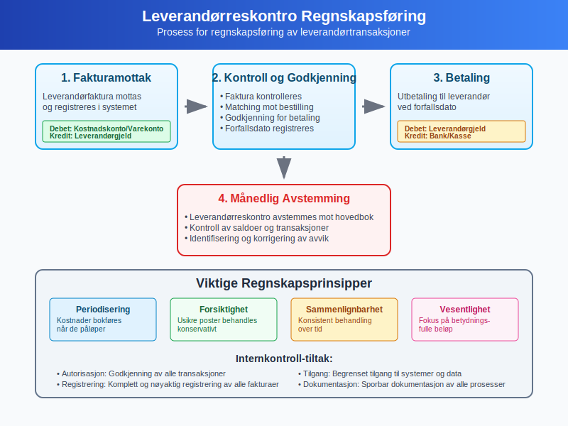
Regnskapsføringsprosess:
-
Fakturamottak: Leverandørfaktura registreres
- Debet: Relevant kostnadskonto/varekonto
- Kredit: Leverandørgjeld
-
Betaling: Utbetaling til leverandør
- Debet: Leverandørgjeld
- Kredit: Bank/kasse
-
Avstemming: Månedlig avstemming mot hovedbok
- Kontroll av saldoer
- Identifisering av avvik
- Korrigering av feil
Viktige regnskapsprinsipper:
- Periodisering: Kostnader bokføres når de påløper
- Forsiktighet: Usikre poster behandles konservativt
- Sammenlignbarhet: Konsistent behandling over tid
- Vesentlighet: Fokus på betydningsfulle beløp
Aldersanalyse av leverandørgjeld
En aldersanalyse av leverandørreskontro gir oversikt over hvor lenge fakturaer har vært ubetalt og hjelper med kontantstrømstyring.
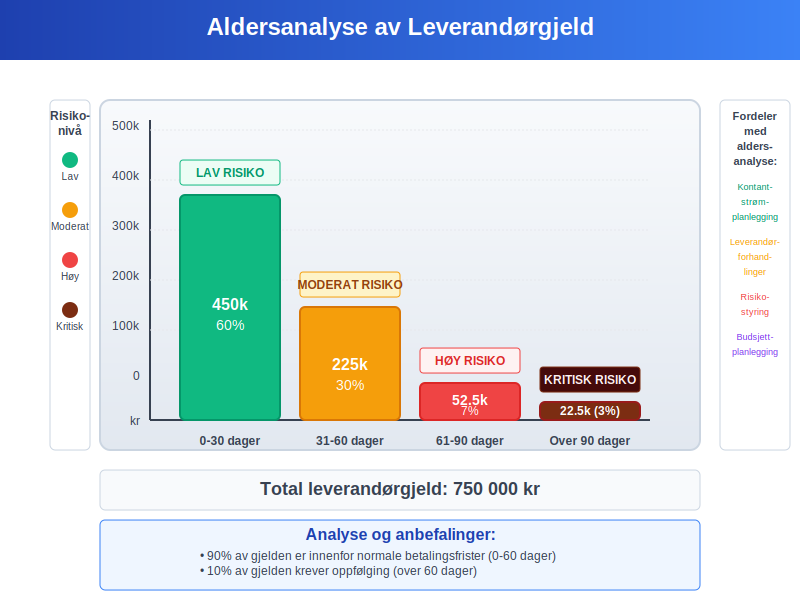
Aldersanalyse-kategorier:
| Aldersgruppe | Beløp | Andel | Risiko |
|---|---|---|---|
| 0-30 dager | 450 000 | 60% | Lav |
| 31-60 dager | 225 000 | 30% | Moderat |
| 61-90 dager | 52 500 | 7% | Høy |
| Over 90 dager | 22 500 | 3% | Kritisk |
| Totalt | 750 000 | 100% | - |
Fordeler med aldersanalyse:
- Kontantstrømplanlegging: Bedre oversikt over kommende betalinger
- Leverandørforhandlinger: Grunnlag for å forhandle betalingsbetingelser
- Risikostyring: Identifisering av potensielle betalingsproblemer
- Budsjettplanlegging: Mer nøyaktige kontantstrømprognoser
Automatisering av leverandørreskontro
Moderne teknologi gjør det mulig å automatisere mange aspekter ved leverandørreskontro-håndtering.
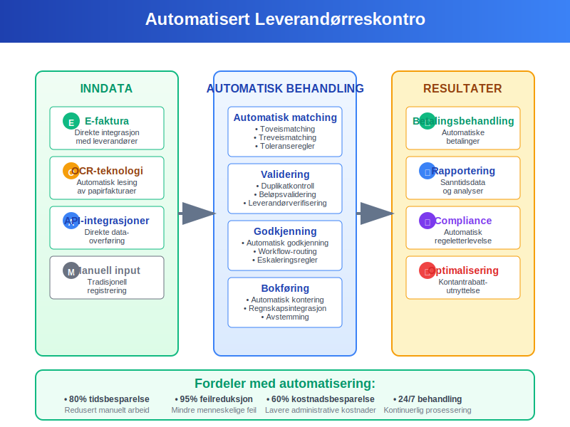
Automatiseringsmuligheter:
1. Elektronisk fakturamottak
- E-faktura: Direkte integrasjon med leverandører
- OCR-teknologi: Automatisk lesing av papirfakturaer
- API-integrasjoner: Direkte dataoverføring fra leverandørsystemer
2. Automatisk matching
- Toveismatching: Faktura mot bestilling
- Treveismatching: Faktura, bestilling og varemottak
- Toleranseregler: Automatisk godkjenning innenfor definerte grenser
3. Betalingsautomatisering
- Automatiske betalinger: Basert på forhåndsdefinerte regler
- Betalingsoptimalisering: Utnyttelse av kontantrabatter
- Bankintegrasjon: Direkte overføring til banksystemer
Fordeler med automatisering:
- Tidsbesparelse: Redusert manuelt arbeid
- Feilreduksjon: Mindre risiko for menneskelige feil
- Bedre kontroll: Konsistente prosesser og kontroller
- Kostnadsbesparelse: Lavere administrative kostnader
- Forbedret rapportering: Sanntidsdata og analyser
Beste praksis for leverandørreskontro
For å oppnå optimal leverandørreskontro-håndtering bør bedrifter følge etablerte beste praksis-prinsipper.
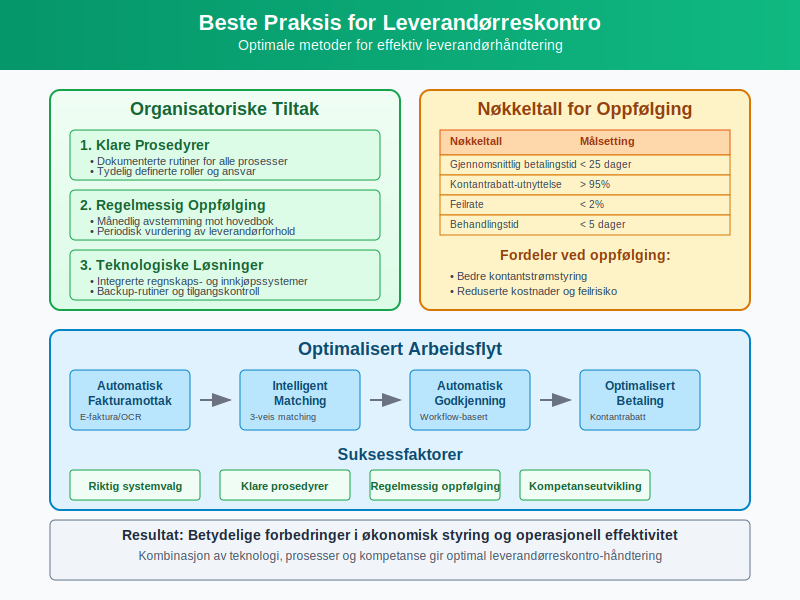
Organisatoriske tiltak:
1. Klare prosedyrer
- Dokumenterte rutiner: Skriftlige prosedyrer for alle prosesser
- Ansvarsfordeling: Tydelig definerte roller og ansvar
- Godkjenningsmatrise: Klare fullmakter for ulike beløpsgrenser
2. Regelmessig oppfølging
- Månedlig avstemming: Kontroll mot hovedbok
- Leverandørevaluering: Periodisk vurdering av leverandørforhold
- Kontraktoppfølging: Overvåking av avtaler og betingelser
3. Teknologiske løsninger
- Integrerte systemer: Sammenkoblede regnskaps- og innkjøpssystemer
- Backup-rutiner: Sikring av data og systemer
- Tilgangskontroll: Begrenset tilgang basert på roller
Nøkkeltall for oppfølging:
| Nøkkeltall | Beregning | Målsetting |
|---|---|---|
| Gjennomsnittlig betalingstid | Sum betalingsdager / Antall fakturaer | < 25 dager |
| Kontantrabatt-utnyttelse | Rabatter oppnådd / Totale rabattmuligheter | > 95% |
| Feilrate | Feil fakturaer / Totale fakturaer | < 2% |
| Behandlingstid | Tid fra mottak til betaling | < 5 dager |
Juridiske og regulatoriske krav
Leverandørreskontro må oppfylle ulike juridiske og regulatoriske krav i Norge.
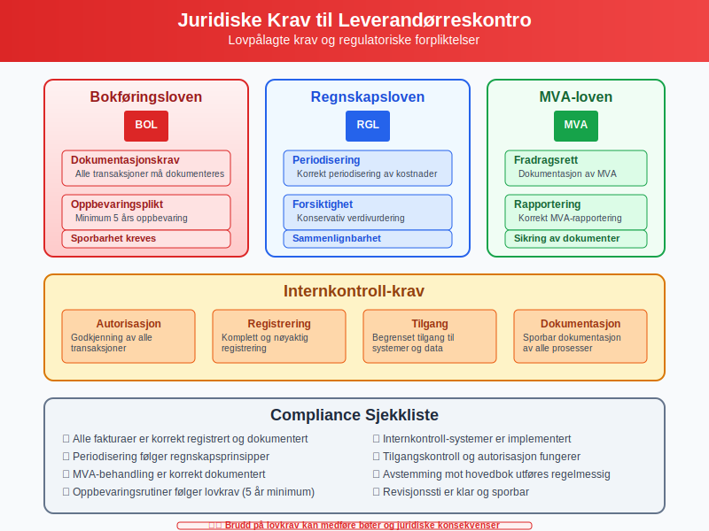
Viktige lovkrav:
1. Bokføringsloven
- Dokumentasjonskrav: Alle transaksjoner må dokumenteres
- Oppbevaringsplikt: Minimum 5 års oppbevaring
- Sporbarhet: Klar sammenheng mellom bilag og bokføring
2. Regnskapsloven
- Periodisering: Korrekt periodisering av kostnader
- Forsiktighet: Konservativ verdivurdering
- Sammenlignbarhet: Konsistent regnskapspraksis
3. Merverdiavgiftsloven
- Fradragsrett: Dokumentasjon av fradragsberettiget MVA
- Rapportering: Korrekt MVA-rapportering
- Oppbevaring: Sikring av MVA-relevante dokumenter
Internkontroll-krav:
- Autorisasjon: Godkjenning av alle transaksjoner
- Registrering: Komplett og nøyaktig registrering
- Tilgang: Begrenset tilgang til systemer og data
- Dokumentasjon: Sporbar dokumentasjon av alle prosesser
Fremtidens leverandørreskontro
Teknologisk utvikling vil fortsette å påvirke hvordan leverandørreskontro håndteres i fremtiden.
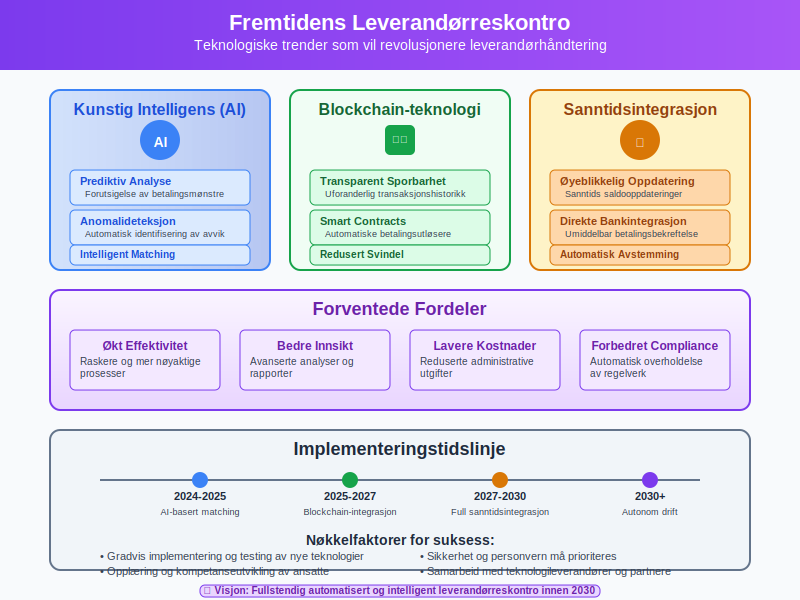
Teknologiske trender:
1. Kunstig intelligens (AI)
- Prediktiv analyse: Forutsigelse av betalingsmønstre
- Anomalideteksjon: Automatisk identifisering av avvik
- Intelligent matching: Avansert faktura-matching
2. Blockchain-teknologi
- Transparent sporbarhet: Uforanderlig transaksjonshistorikk
- Smart contracts: Automatiske betalingsutløsere
- Redusert svindel: Økt sikkerhet og tillit
3. Sanntidsintegrasjon
- Øyeblikkelig oppdatering: Sanntids saldooppdateringer
- Direkte bankintegrasjon: Umiddelbar betalingsbekreftelse
- Automatisk avstemming: Kontinuerlig balansering
Forventede fordeler:
- Økt effektivitet: Raskere og mer nøyaktige prosesser
- Bedre innsikt: Avanserte analyser og rapporter
- Lavere kostnader: Reduserte administrative utgifter
- Forbedret compliance: Automatisk overholdelse av regelverk
Kontantstrøm og leverandørreskontro
Leverandørreskontro spiller en kritisk rolle i kontantstrømstyring og likviditetshåndtering.
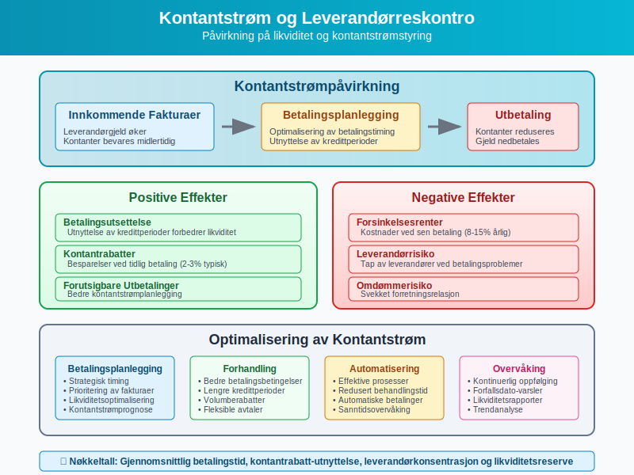
Kontantstrømpåvirkning:
Positive effekter:
- Betalingsutsettelse: Utnyttelse av kredittperioder
- Kontantrabatter: Besparelser ved tidlig betaling
- Planlegging: Forutsigbare utbetalinger
Negative effekter:
- Forsinkelsesrenter: Kostnader ved sen betaling
- Leverandørrisiko: Tap av leverandører ved betalingsproblemer
- Omdømmerisiko: Svekket forretningsrelasjon
Optimalisering av kontantstrøm:
- Betalingsplanlegging: Strategisk timing av betalinger
- Forhandling: Bedre betalingsbetingelser
- Automatisering: Effektive betalingsprosesser
- Overvåking: Kontinuerlig oppfølging av forfallsdatoer
Leverandørreskontro og kredittoppfølging
Effektiv kredittoppfølging av leverandører krever systematisk bruk av leverandørreskontro-data.
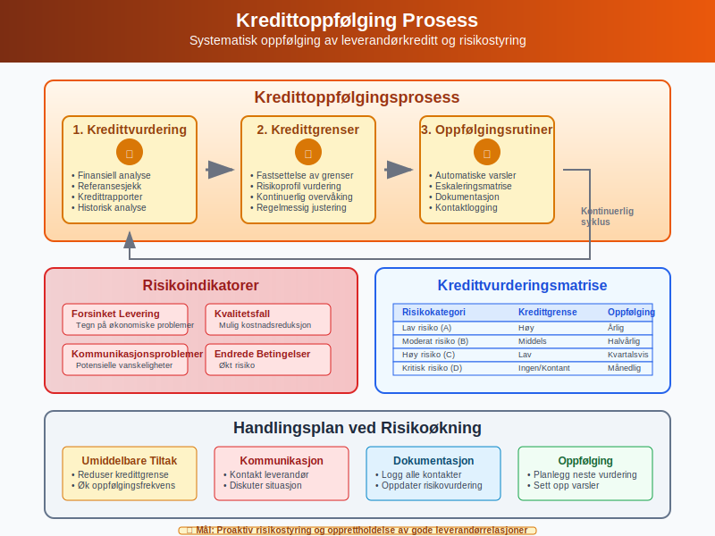
Kredittoppfølgingsprosess:
1. Kredittvurdering
- Finansiell analyse: Vurdering av leverandørens økonomi
- Referansesjekk: Kontakt med andre kunder
- Kredittrapporter: Bruk av eksterne kredittopplysninger
2. Kredittgrenser
- Fastsettelse: Basert på risikoprofil og behov
- Overvåking: Kontinuerlig oppfølging av utestående
- Justering: Regelmessig vurdering og tilpasning
3. Oppfølgingsrutiner
- Automatiske varsler: Ved overskridelse av grenser
- Eskaleringsmatrise: Trinnvis oppfølging
- Dokumentasjon: Logging av alle kontakter
Risikoindikatorer:
- Forsinket levering: Tegn på økonomiske problemer
- Kvalitetsfall: Mulig kostnadsreduksjon
- Kommunikasjonsproblemer: Potensielle vanskeligheter
- Endrede betalingsbetingelser: Økt risiko
Konklusjon
Leverandørreskontro er et uunnværlig verktøy for moderne bedriftsdrift som gir detaljert oversikt over alle økonomiske forhold med leverandører. Gjennom systematisk registrering og oppfølging av leverandørtransaksjoner sikrer leverandørreskontro:
Hovedfordeler:
- Finansiell kontroll: Komplett oversikt over leverandørgjeld
- Kontantstrømstyring: Bedre planlegging av utbetalinger
- Leverandørrelasjoner: Styrket samarbeid gjennom punktlige betalinger
- Compliance: Overholdelse av juridiske og regulatoriske krav
- Effektivitet: Automatiserte prosesser og reduserte kostnader
Suksessfaktorer:
- Riktig systemvalg: Tilpasset bedriftens størrelse og behov
- Klare prosedyrer: Dokumenterte og konsistente rutiner
- Regelmessig oppfølging: Kontinuerlig overvåking og avstemming
- Teknologiutnyttelse: Automatisering der det er hensiktsmessig
- Kompetanseutvikling: Opplæring av ansatte i beste praksis
Ved å implementere en robust leverandørreskontro-løsning kan bedrifter oppnå betydelige forbedringer i både økonomisk styring og operasjonell effektivitet, samtidig som de bygger sterke og bærekraftige leverandørrelasjoner.
For bedrifter som ønsker å optimalisere sin leverandørreskontro-håndtering, anbefales det å starte med en grundig evaluering av eksisterende prosesser og systemer, etterfulgt av en trinnvis implementering av forbedringer basert på beste praksis og moderne teknologiske løsninger.